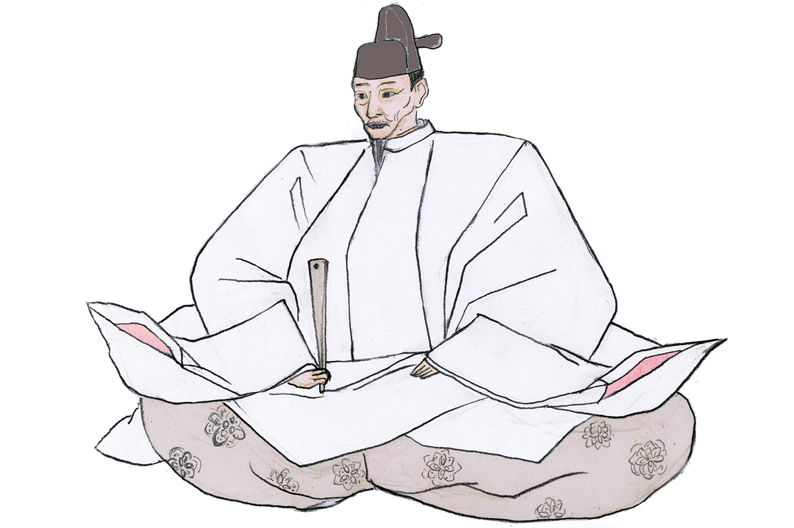
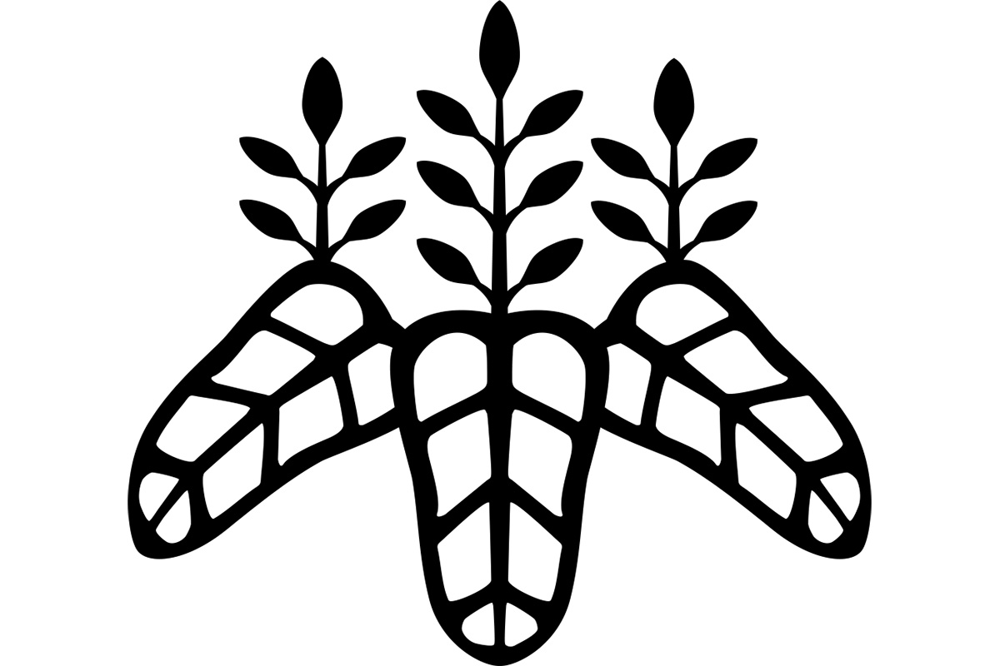

Префектура Айти · Нагоя · история
Хидэёси Тоётоми: от носильщика сандалий до правителя Японии

Сын простой семьи из провинции Овари начинал с того, что носил сандалии за своим господином, а закончил правителем всей Японии. Карьеру Хидэёси Тоётоми называют самой головокружительной в эпоху воюющих провинций, и в Японии его до сих пор ласково зовут «Тайко-сан».
Эпоха
Век войн и три объединителя
С конца XV до конца XVI века Япония жила в непрерывной войне. Сёгунат Муромати окончательно потерял власть, и место прежних военных губернаторов заняли самостоятельные князья, которые делили страну силой. Эта эпоха, Сэнгоку, подарила Японии больше легендарных полководцев, чем любая другая, и самый невероятный путь среди них прошёл Хидэёси Тоётоми (1537?–1598).
Он родился в провинции Овари, на западе нынешней префектуры Айти, в семье Киносита. Год рождения точно не известен: обычно называют 1537-й, но есть и другие версии. Имён за жизнь он сменил несколько: Токитиро Киносита, затем Хидэёси, Хидэёси Хасиба, Хидэёси Фудзивара и, наконец, Хидэёси Тоётоми.
Его старшей женой была Онэ, приёмная дочь в самурайской семье Асано, позднее известная как Кита-но-мандокоро. Среди младших жён самой знаменитой стала Ёдо-доно, дочь полководца Нагамасы Адзаи (1545–1573).

Жизнь
Из слуг в правители
Имя Хидэёси в Японии знает каждый: он завершил объединение страны после долгих войн. Начинал он слугой Нобунаги Оды (1534–1582), полководца из Овари, который первым взялся собрать Японию под одной властью, и, по известному рассказу, носил за господином его сандалии. От этой ступени Хидэёси поднялся до правителя всей страны, и потому о нём говорят как о человеке с самой стремительной карьерой эпохи. Вместе с Нобунагой и Иэясу Токугавой (1543–1616), основателем последнего сёгуната, он входит в число «трёх великих объединителей», и все трое родом из нынешней Айти.
О нём рассказывают множество историй. Самая известная говорит, что лицом он походил на обезьяну. При этом Хидэёси хорошо разбирался в искусстве: любил театр но и кабуки, а чайной церемонии учился у мастера Сэн-но Рикю (1522–1591), который сделал из чаепития целое искусство.
Объединив страну, Хидэёси обратил взгляд за море и дважды посылал войска на Корейский полуостров, но оба похода закончились неудачей. Весной 1598 года он устроил пышное любование сакурой при храме Дайго-дзи в Киото, и вскоре после этого праздника слёг. Умер он в том же году, окружённый своими вассалами.
Сегодня Хидэёси по-прежнему зовут «Тайко-сан»: тайко называли регента, передавшего пост наследнику. Его главная постройка, огромный замок Осаки, не имел равных в своё время и стал символом города.
Предсмертные стихи
«Росой упал, росою исчезаю, вот и вся моя жизнь. И Нанива, и всё, что было, лишь сон во сне»
Хидэёси Тоётоми, предсмертное стихотворение
Нанивой называли место, где стоял замок Осаки, а в японском звучании этого слова слышится ещё и «всё на свете». Хидэёси вспоминает свою жизнь, которая пронеслась мгновенно, как падает и исчезает капля росы.
Хронология
Главные даты
- 1537 Рождается в провинции Овари (год рождения спорный).
- 1554 Примерно с этого года служит Нобунаге Оде младшим слугой.
- 1568 Отличается при взятии замка Мицукури в провинции Оми. Когда Нобунага входит в Киото, ему поручают дела столицы.
- 1573 Становится владельцем замка Нагахама. Примерно тогда же берёт фамилию Хасиба.
- 1582 Вторгается в провинцию Биттю и берёт замок Такамацу, затопив его водой.
- 1584 Битва при Комаки и Нагакутэ. Получает третий придворный ранг и должность старшего советника двора.
- 1585 Получает второй ранг, становится министром двора, затем регентом-кампаку. Покоряет остров Сикоку.
- 1586 Получает фамилию Тоётоми и пост великого министра, его власть окончательно утверждена.
- 1590 Идёт походом на восток и осаждает замок Одавара, оплот рода Ходзё.
- 1592 Посылает войско на Корейский полуостров, чтобы завоевать Китай династии Мин и подчинить Корею.
- 1597 Отправляет в Корею второе войско.
- 1598 Умирает от болезни в замке Фусими.
Два эпизода этой истории разыгрались в самой Айти. Летом 1582 года, после гибели Нобунаги, в замке Киёсу его вассалы решали, кто наследует дому Ода, и там Хидэёси взял власть над родом в свои руки: об этом наша статья о замке Киёсу. О битве при Комаки и Нагакутэ, где Хидэёси в 1584 году столкнулся с Иэясу Токугавой, рассказывает статья о замке Инуяма.
Где увидеть
Родина Хидэёси в Нагое
Местом рождения Хидэёси считается деревня Накамура в провинции Овари, на месте которой лежит район Накамура в Нагое. Точное место неизвестно, есть версия, что дом стоял примерно в 800 метрах южнее, но память о нём собрана в парке Накамура, в десяти минутах ходьбы от станции метро «Накамура-коэн» на линии Хигасияма. Из этих же мест родом и Киёмаса Като (1562–1611), один из самых верных полководцев Хидэёси.
По дороге от станции к парку стоят огромные ворота тории высотой около 24,5 метра. Их построили в 1929 году, и тогда они были самыми большими в Японии. В самом парке стоит камень на месте рождения Хидэёси: в 1883 году здесь поставили деревянный столб, а в 1911 году губернатор префектуры заменил его каменным памятником.
Святилище Тоёкуни основали местные жители в 1885 году. Главное божество здесь сам Хидэёси, а в малом святилище почитают Киёмасу Като. Сюда приходят просить об успехе в карьере и удаче, а ещё о покровительстве в чайном деле и строительстве.
Святилище Тоёкуни
- Адрес
- префектура Айти, Нагоя, район Накамура, Накамура-тё, Киносита-ясики, парк Накамура
- Телефон
- +81 52-411-0003
- Часы работы
- 9:30–16:30
В парке же работает музей Хидэёси и Киёмасы, отделение городского музея Нагои. Картины, предметы ремесла, документы и видео рассказывают о двух полководцах и о воинах Овари эпохи войн. Постоянная экспозиция меняется примерно раз в восемь недель, вход бесплатный.
Музей Хидэёси и Киёмасы
- Адрес
- префектура Айти, Нагоя, район Накамура, Накамура-тё, Тяноки, 25, культурный центр парка Накамура, 2-й этаж
- Телефон
- +81 52-411-0035
- Часы работы
- 9:30–17:00
- Выходные
- понедельник (если это праздник, то следующий будний день), четвёртый вторник месяца (если это праздник, музей открыт), с 29 декабря по 3 января
- Цены / Вход
- бесплатно
- Сайт
- city.nagoya.jp
Рядом с парком стоит храм Дзёсэн-дзи школы Нитирэн, который тоже называет себя местом рождения Хидэёси. По преданию, его основал Киёмаса Като после смерти господина в 1598 году. Здесь показывают колодец, водой которого будто бы обмыли новорождённого Хидэёси, падуб, посаженный, как говорят, его рукой, и статую самого Хидэёси. Источник иссяк в 1960-х годах, когда город разросся, но около 1989 года вода вернулась и течёт до сих пор.
Храм Дзёсэн-дзи
- Адрес
- префектура Айти, Нагоя, район Накамура, Накамура-тё, Киносита-ясики, 47
- Телефон
- +81 52-412-3467
- Цены / Вход
- бесплатно
- Сайт
- jousenji.or.jp
С 24 января 2026 года по 11 января 2027 года в парке Накамура работает временный «Музей Тоётоми», посвящённый Хидэёси и его брату Хидэнаге (1540–1591).
Фото: Мария Араи (иллюстрация).